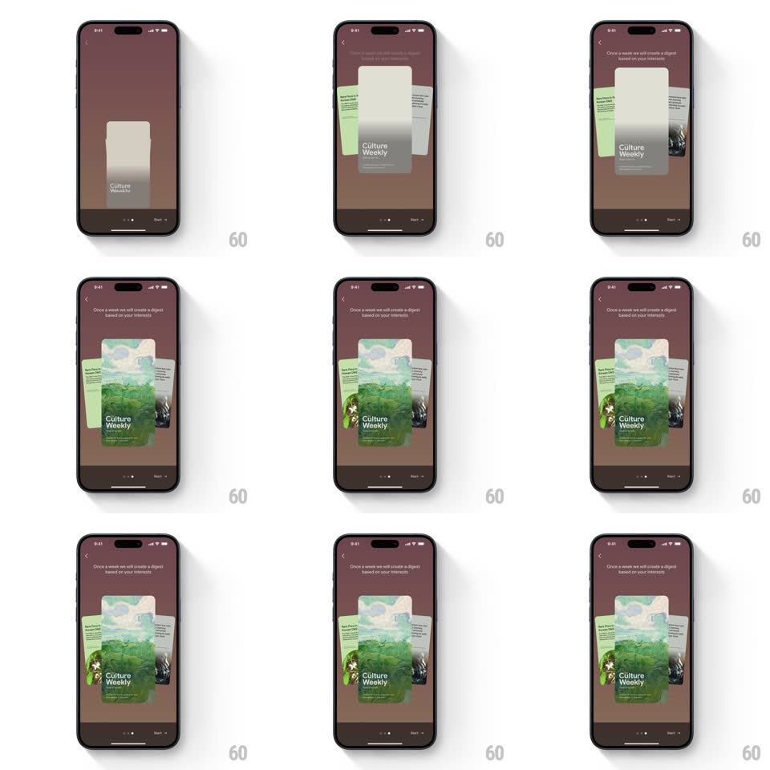

Media
Frame-by-frame

Rebuild this animation 1:1: Google Arts & Culture's Culture Weekly onboarding - a digest card rises on the dark maroon screen, then two side cards slide in and fan out behind it with a pop while the explainer caption fades in above.

Rebuild this animation 1:1: Google Arts & Culture's Culture Weekly onboarding - a digest card rises on the dark maroon screen, then two side cards slide in and fan out behind it with a pop while the explainer caption fades in above. ## Integration Integration: stack-agnostic spec - springs given as stiffness/damping, timed motions as duration + curve; map every value to your framework and animation library of choice. ## Scene Dark maroon onboarding screen: back chevron and title top, the caption "Once a week we will create a digest based on your interests", a center card stack (front: illustrated "Culture Weekly" cover; behind: a green card left, a dark photo card right), page dots, and a Skip / Next footer. ## Motion spec Pattern: card-stack build, ~1.2s. - Rise: the front card slides up from below center and fades in (350ms, ease-out), slightly overshooting (spring ~340/22). - Fan: the two rear cards slide in from opposite sides (300ms, ease-out) while rotating into a fan (+-8deg) and settling 24px behind the front card's edges. - Pop: the front card pops forward (scale 0.96 -> 1.03 -> 1, spring ~400/20) once the fan lands. - Caption: the explainer text fades down in above the stack (250ms, +200ms). ## Calibration - The fan is symmetric: both rear cards mirror each other's angle and offset. - The stack settles as one unit - after the pop, all three cards idle together. ## Reduced motion Cards fade in already fanned (250ms); caption fades. ## Don't miss - The front cover is a full-bleed illustration with the "Culture Weekly" wordmark, not a plain card. - Rear cards show real content edges (headline text and imagery), readable enough to feel like issues.